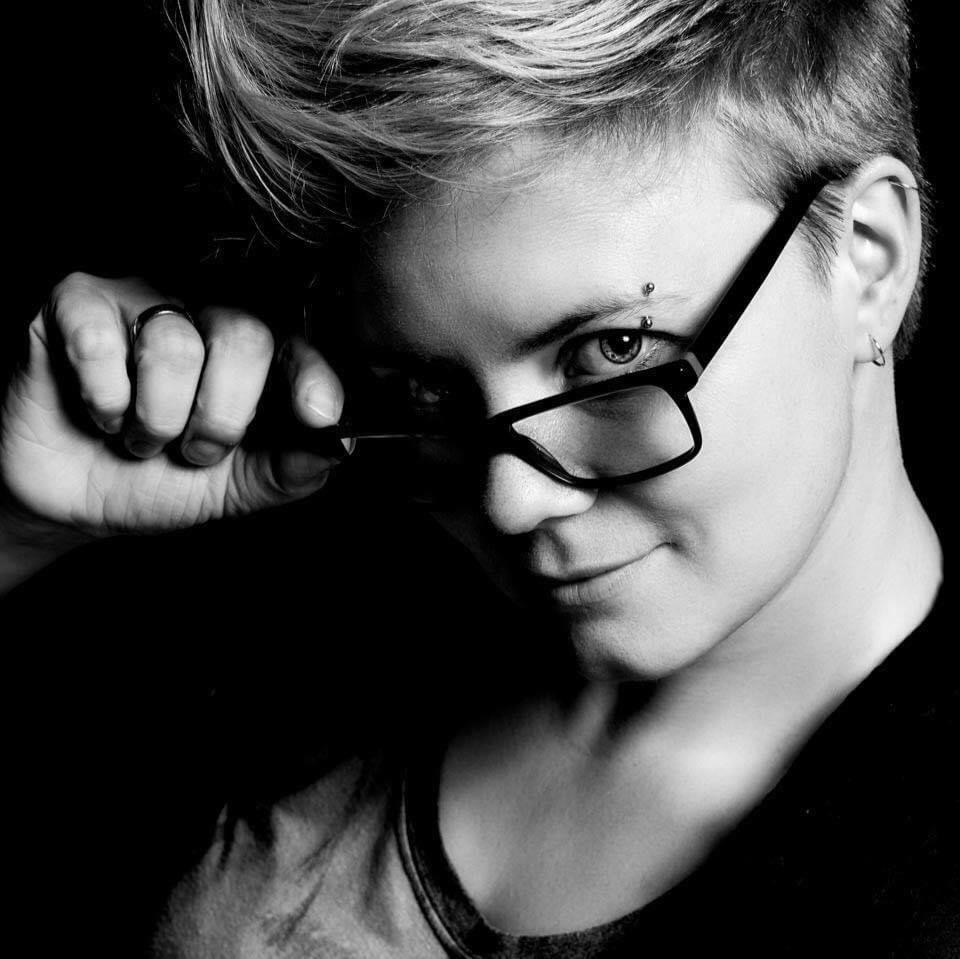
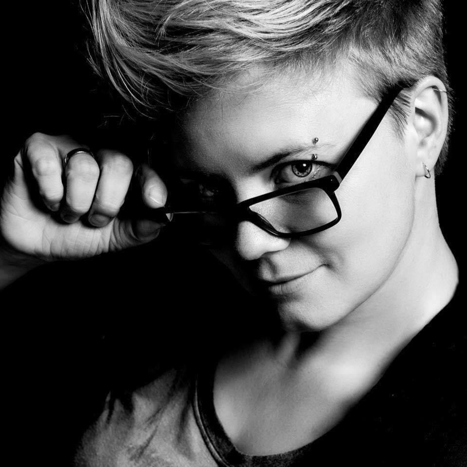
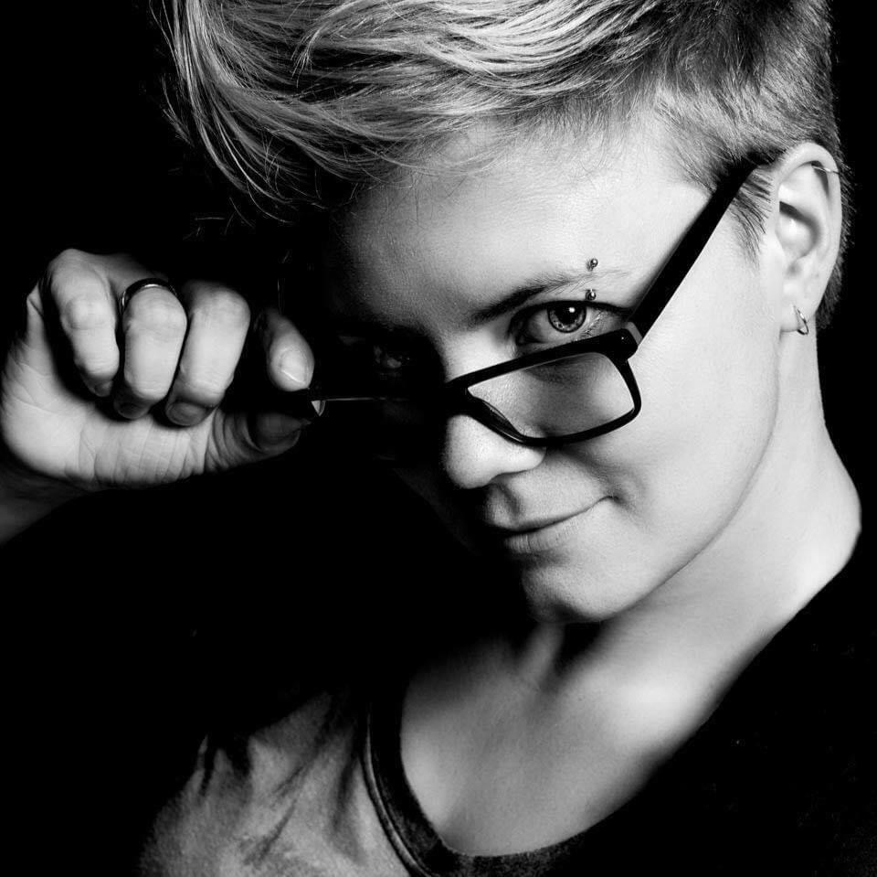
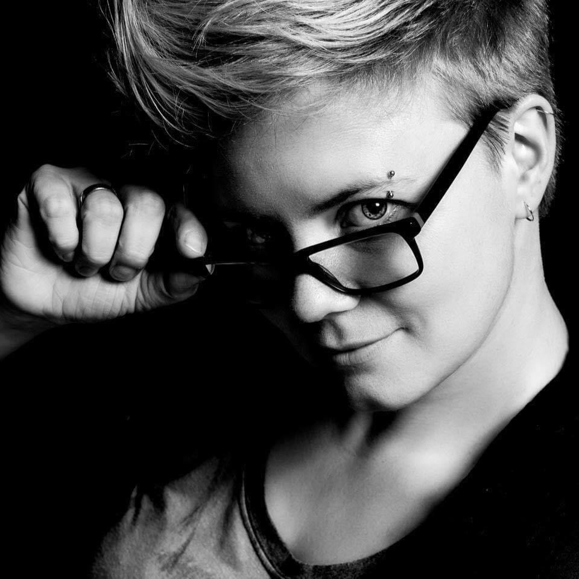

Jeg er en positiv, hjelpsom, kreativ og løsningsorientert person som går langt for å gi den beste servicen jeg kan gi både til jobben og de menneskene jeg har rundt meg.
Før jeg begynte på interaksjonsdesign studiet jobbet jeg 15 år i apotek som farmasøyt. I denne rollen har jeg sett hvor viktig det er med god forståelse og service for at kundene mine skal få den beste opplevelsen de kan få når de kommer til meg. Enten det er å finne den beste løsningen på problemene de kommer med, eller å gi dem en forklaring til det de lurer på.
Den beste følelsen er å finne den løsningen som passer best og som gjør at kunden går smilende ut døra og gjerne kommer igjen og igjen.
Da jeg startet på noe helt nytt, ville jeg derfor utfordre problemløsningsevnen og forståelsen min for hva mennesker trenger, og jeg føler jeg har funnet det jeg har lett etter.
Jeg brenner for god brukervennlighet på alle plan og vil gjerne være med å kunne gi alle adgang til den digitale verdenen. I løpet av skolegangen har jeg funnet tilbake gleden av å lære nye ting og mener det er læring som er nøkkelen til suksess.
Figma
Procreate
Affinity designer
VS Code
Notion
Github